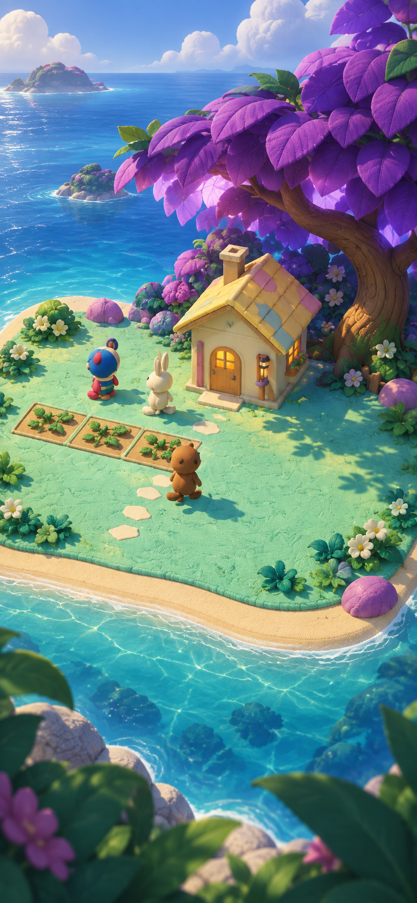
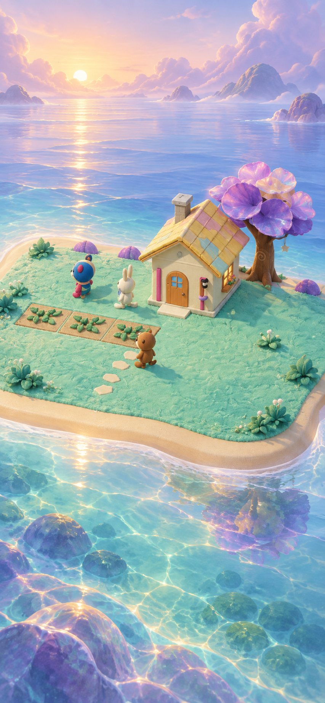
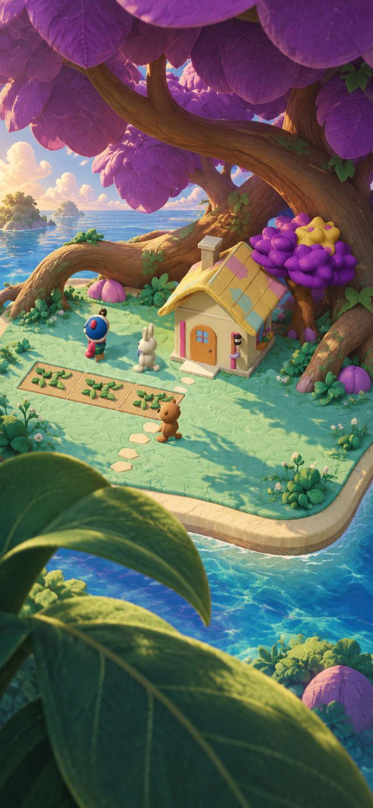
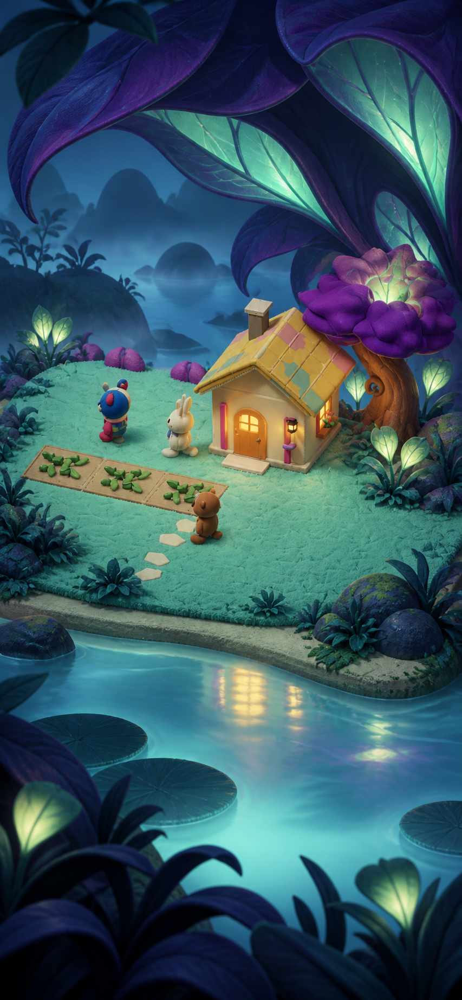

光・素材・尺度・奥行きの比較。画像生成による未採用コンセプト。実アプリ画面ではありません。

既存の明るさとの連続性が高い。神秘性より豊かな庭の印象が強い。

透明感と夢のような美しさ。隠れた奥は少なく、リゾート感も残る。

巨大な枝と葉で空間そのものが幻想的。前景の葉と樹冠が画面を大きく占める。

今回のミステリアスさは最も強い。内側の光・深い陰・暖かい家が効く。暗さと顔の読みやすさは要調整。